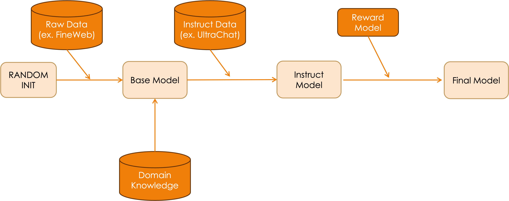

Continued Pre-Training (CPT)¶
Countinuous, Continual, Continued 다양하게 불리는 Pre-Training 기법입니다.
CPT 개요¶
Continued Pre-Training(CPT)은 이미 Pre-trained 된 모델, 그렇지만 Instruction tuining 되기전 상태의 Base Model에 데이터를 추가 학습시키는 기법입니다.
- 목적: 모델을 새로운 도메인, 언어, 지식으로 확장 시킵니다.
- 방식: 기존 사전학습과 동일한 문제 정의 (Next Token Prediction)를 사용하지만, 특정 도메인이나 언어에 집중하여 데이터를 모아두는 것이 일반적입니다.
| 💡 필자의 의견 |
|---|
| 왜 Instruction Model 이 아닌 Base Model 에 데이터를 추가 학습시키는 걸까요? |
| Instruction Model 에 corpus 를 추가하다보면, Insturction Following 능력을 포함해 모델이 많이 망가집니다 (Catastrophic Forgetting) |

그냥 Pre-Train과 CPT의 차이점¶
- 시작점: Random init 된 모델에서 시작하느냐, 아니면 이미 학습된 모델에서 시작하느냐 가 차이입니다.
- 데이터 규모: 요즘 Pre-Train은 보통 Trillon 단위의 토큰을 사용하지만, CPT는 일반적으로 Billion 단위의 토큰을 사용합니다.
- 목표: 새로운 지식을 습득하면서 기존 능력을 유지하는 균형이 중요합니다, 생각보다 어려워요... ㅠㅠ
도메인 적응을 위한 CPT¶
특정 도메인이나 언어에 모델을 특화시키기 위해 CPT를 활용할 수 있습니다.
특정 도메인 데이터로 CPT 성공 사례¶
- 금융 도메인: Amazon의 FinPythia는 Pythia 모델을 금융 텍스트로 추가 학습시켜 금융 NLP 작업에서 10% 성능 향상
- 참고: AWS Machine Learning Blog - Efficient continual pre-training LLMs for financial domains, 아주 자세하게 잘 나와있어요, CPT 하실 분들은 꼭 한번 보세요.
- 코드 도메인: Code Llama는 LLaMA-2를 5천억 토큰의 코드 데이터로 추가 학습시켜 코딩 능력 강화, 이 외에도 코드 특화 모델들은 너무 많고 성공 사례가 많아서 생략합니다.
언어 확장을 위한 CPT (한국어)¶
Upstage의 Solar 및 Solar Pro 모델은 한국어 확장을 위한 CPT의 성공적인 사례입니다.
참고: Solar Pro 소개
- Solar 10.7B (Solar Mini): Mistral 7B를 기반으로 Depth Up-Scaling(DUS) 기법을 적용해 48레이어(10.7B 파라미터)로 확장한 후, 추가 Corpus로 CPT을 진행했습니다, 그리고 꽤나 좋은 한국어 성능을 보였죠.
- Solar Pro (22B): Phi-3 Medium(14B)을 기반으로 22B 규모로 확장하고, "1 Trillion Token Club"이라 불리는 대규모 영어·한국어 말뭉치(약 1조 토큰)로 CPT를 수행했습니다. 이 과정에서 한국어 이해력을 크게 향상시켰습니다.
한국어 CPT 적용 방식:
- 토크나이저 확장: 한국어 단어를 효율적으로 표현할 수 있도록 토크나이저를 확장하거나 재학습
- 대규모 한국어 데이터: Pretrain 할 Corpus 에 한국어 텍스트를 대량 포함
- 한국어 instruction 파인튜닝: 한국어 질의응답, 요약 등의 태스크에 대한 추가 학습
성능 향상:
- Solar 10.7B는 CPT 이후 동급 모델들을 능가하는 성능을 보였으며, 때로는 30B 규모 모델과 비슷한 성능을 달성
- Solar Pro는 HuggingFace Open LLM 리더보드(70B 미만 부문)에서 1위를 기록하며, 단일 GPU로 구동 가능한 모델 중 최고 수준의 지능을 입증
이러한 CPT 과정을 통해 Solar 시리즈는 한국어와 영어 모두에서 뛰어난 성능을 보이며, 특히 Solar Pro 정식 버전은 한국어 질의에 유창하게 답변하고 다양한 한국어 NLP 과제에서 우수한 성과를 보일 것으로 기대됩니다.
CPT 최적화 기법¶
효율적인 CPT를 위한 알려진 다양한 기술적 팁이 있습니다, 주요 목표는 기존에 이미 학습된 pre-trained 모델의 성능을 유지하면서 기능을 확장하는 것입니다.
효과적인 학습률 및 배치 크기 선택¶
- 낮은 Learning Rate: 사전학습보다 낮은 학습률 사용 (모델이 이미 좋은 영역에 있기 때문)
- 분리된 Learning Rate: 임베딩 레이어와 출력 레이어에 더 작은 학습률 적용하여 안정성 확보
- Warmup 단계: 짧은 워밍업 단계를 통해 학습률을 안전하게 높이는 방법 활용
- 데이터 혼합: 새 도메인 데이터와 일부 원본 데이터를 혼합하여 기존 능력 유지
사전학습 텍스트 선별 기준¶
- 도메인 관련성: 목표 도메인과 직접 관련된 고품질 텍스트를 선택하는 것이 중요합니다.
- 다양성: 도메인 내 다양한 하위 주제와 스타일을 포함하는 균형 잡힌 코퍼스를 구성해야 합니다.
- 최신성: 모델 지식 업데이트가 목적인 경우 최신 정보를 포함하는 텍스트를 선택하는 것이 효과적입니다.
- 합성 데이터: 실제 데이터가 부족한 경우 지식 그래프나 다른 모델을 통해 합성 데이터를 생성하여 활용할 수 있습니다.
적용 사례¶
기업과 연구소에서는 다양한 목적으로 CPT를 활용하고 있습니다.
- 도메인 지식 특화: Amazon의 FinPythia, Bloomberg의 BloombergGPT 등 금융 특화 모델이 좋은 예시입니다.
- 최신 정보 반영: 정기적으로 새로운 웹 데이터로 CPT를 수행하여 모델 지식을 갱신합니다.
- 내부 지식 통합: 기업 내부 문서, 매뉴얼, 트랜스크립트 등으로 CPT를 수행하여 조직 지식을 학습시킵니다.
- 지속적 학습 시스템: 주기적으로 새 데이터를 수집하고 모델을 업데이트하는 파이프라인을 구축합니다.
참고 자료: